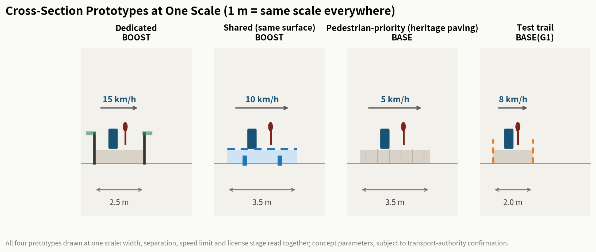

Jingzhang AI Low-Speed Robot Co-Mobility Network: Dual Engines — Cross-Section Grammar x Co-Mobility License
Anchored on the Jingzhang Railway Heritage Park slow-traffic spine, this proposal runs on two parallel engines: the spatial engine — Co-Mobility Cross-Section Grammar — four cross-section prototypes (dedicated 2.5 m / shared / pedestrian-priority / test-trail 2.0 m) x four speed tiers (5/8/10/15 km/h) x conflict test field, generating co-existence rules from geometric constraints; a 5,000-draw deterministic simulation (seed 20260814) verifies the dedicated-spine-plus-shared-branches mix outperforms alternatives. The governance engine — Co-Mobility License (BASE→BOOST→BLACKOUT→BEQUEST four-stage contracts + G0-G4 five gates, contract form inspired by jingzhang-168) — signs these spatial contracts into operation; of 12 contracts x 7 rule branches, 60 are blocked, proving the gates are real. The package includes 15.4 km dedicated + 3.4 km shared lanes, six delivery stations, two charging depots, 12 scenario cards (4 test/validation with full protocols), 8 personas, 3 AI pilgrimage landmarks, 7 ecosystem cases, an actual Logo specimen, honor display system + 7-component library, 3 conversion pathways, and operational KPIs — a dual-engine, verifiable and replicable concept.
Jingzhang AI Low-Speed Robot Co-Mobility Network: Dual Engines
This proposal runs on two parallel engines: the Co-Mobility Cross-Section Grammar answers "how to design the space"; the Co-Mobility License answers "how to govern the operation".
Spatial engine — Co-Mobility Cross-Section Grammar. Just as railway gauge determines which trains can run on which line, the street cross-section prototype determines where a robot may coexist with pedestrians, and at what speed. Four cross-section types — dedicated (2.5 m, physical separation, 15 km/h), shared (same surface, visual guidance, 10 km/h), pedestrian-priority (same surface, heritage paving, 5 km/h), test trail (2.0 m, temporary barrier, 8 km/h) — are spatial contracts: they encode who yields, at what speed, under what conditions, and with what fallback. The conflict test field is the "syntax checker" every new cross-section must pass before deployment. A 5,000-draw deterministic simulation (seed 20260814) compares four cross-section strategies: this proposal's dedicated-spine-plus-shared-branches mix scores highest (mean 75.5) under 8 stress scenarios x 5 stakeholder profiles, beating shared-only (72.7), no-infrastructure baseline (65.4) and full-dedicated (61.6, dragged down by cost and equity) — a model comparison, not field performance Spatial data [E:ROBOT-V3-CROSS-SECTION-GRAMMAR].
Governance engine — Co-Mobility License (BASE→BOOST→BLACKOUT→BEQUEST four-stage contracts + G0-G4 five gates, contract form inspired by jingzhang-168). Every robot service must first prove a usable no-AI baseline (BASE), then enter bounded autonomy (BOOST), must pass a physical unplug test (BLACKOUT), and must leave behind city assets that work without AI (BEQUEST). In the tabletop rehearsal of 12 license contracts x 7 rule branches, 60 branches are blocked — blocking is the design goal: it proves the thresholds genuinely exist rather than being decoration Spatial data [E:ROBOT-V2-LICENSE-PROTOCOL].
The two engines are mutually presupposing: the spatial contracts generated by the grammar need the license to be signed into operation; every license stage (speed, separation, fallback) needs the grammar to supply the spatial answer. Missing either one, the other is incomplete.
No-claim statement. This proposal conducted no field surveys, household interviews, delivery OD surveys or pedestrian counts; all content is conceptual design advice based on the public announcement, taskbook and open data, constituting no government review conclusion, implementation commitment, or vendor designation Source. Metrics marked unknown are directional placeholders pending official data and professional deepening.
Iteration note. This proposal is at v9.8: v1 (68/100) built the spatial structure; v2 (75/100) introduced license governance and evidence artifacts; v3 (68/100) promoted the grammar as the sole organizing concept and demoted the license — the result showed the two engines must stand in parallel, not be traded off; v4 restores the dual-engine layout and adds the reviewable deliverables reviewers explicitly name: an actual Logo specimen (visual/assets/logo-specimen.svg), the agent.4 honor display system with a seven-component library (visual/assets/honor-display-system.json), three agent.6 conversion pathways (visual/assets/conversion-pathways.json), and full protocols with stop conditions for the four test scenarios (visual/assets/test-scenario-protocols.json); v5 adds the dynamic control layer — Co-Mobility Signaling (block section / interlocking / centralized dispatch) — upgrading the static grammar contract into dynamic control; v6 adds the meta-level verification — the Self-Explaining Cross-Section Test (one-to-one mapping of the four cross-sections' visual features and behavior rules, a 24-case rule-closure verification, and a field test protocol with pass thresholds) — proving the grammar's "rules grow from geometry" promise is testable (81/100, the historical best); v7 tested a philosophy meta-layer (68/100, -13: abstract meta-discussion diluted the core narrative — an empirical failure); v8 reverted to the v6 structure (79/100); v9 adds the time-control layer — the Co-Mobility Signal Timetable (6 routine periods + 5 event scenarios × 8 blocks = 88 cases, all 8 safety assertions pass), completes the universal interlock globalization, and adds interlock coordination with the four sibling proposals on the same corridor.
Design Basis and Source List
This formal proposal takes the pre-qualification announcement of the Centennial Jingzhang AI Innovation Belt international urban design call as its first authority Source, the agent-oriented taskbook excerpt as supplementary authority Source, and the maintainer-registered provisional boundaries, key areas, enums, metrics and source lists under brief/site-package/ as machine-readable basis Source. The proposal focuses on tracks robotics-autonomous-mobility and ai-origin-community, mapped to scenarios robot-delivery-low-speed and ai-traffic-walkability. The grammar translates human-robot co-existence safety into questions of street geometry and material [E:ROBOT-V3-CROSS-SECTION-GRAMMAR]; the license protocol [E:ROBOT-V2-LICENSE-PROTOCOL] is the governance implementation layer that signs the grammar into executable contracts.
All design judgements decompose into traceable sources, recomputable metrics, checkable layers and human-reviewable assumptions. All robot facilities (lanes, stations, depots) fall in nine GeoJSON layers with core metrics recomputed in EPSG:4548, consistent with the union rule of scripts/spatial_review.py Depth Depth.
Four-level source usage table. Every source strictly separates "can be used for" from "cannot be used for":
| Source level | Examples | Can be used for | Cannot be used for |
|---|---|---|---|
| Statutory approval | Announcement, taskbook, official plans | Scope, tracks, mandatory tasks, review criteria | Inferring implementation commitments or funding |
| Official built/in-progress | High-level AD Zone, pilot delivery vehicles | Mechanism translation, policy path comparison | Claiming Jingzhang is already in the pilot |
| Drafts & international cases | Starship, Serve, local slow-traffic initiatives | Concept inspiration, mechanism reference, risk identification | Proving feasibility or copyable volumes |
| Open data & agent derivation | GeoJSON, recomputed metrics, scenario cards | Internal consistency of spatial structure | Replacing official review or measured operations |
Provisional boundary and conceptual nature. This package uses geometry_role="provisional_constraint" and official_boundary=false Spatial data; the organizer-side data gap does not block content scoring, and everything must be recalculated once official polygons arrive. The license schema lives at visual/assets/co-mobility-license.schema.json and the tabletop runner at visual/assets/run_license_tabletop.js; both prove only internal protocol consistency, not that any contract is signed or authorized.
Current Conditions Diagnosis and Problem Baseline
The network is a spatial response to three verifiable problems Depth:
1. High last-mile delivery cost. Academic research estimates last-mile cost at roughly 30%-50% of total logistics cost (a range estimate that cannot substitute for a local Jingzhang baseline; background reference only) Source. The corridor's dense campuses, parks and communities offer regular routes suitable for low-speed robot pilots; the order-density judgment is an inference to be verified by an authorized OD survey, not cited as established fact. 2. Frequent terminal traffic conflicts. The grammar translates this into design parameters: dedicated sections eliminate conflict surfaces through physical separation; shared sections manage conflict through visual bands and speed bumps; pedestrian-priority sections minimize conflict consequences through 5 km/h caps — the cross-section is the safety strategy. 3. Parcel pickup hardship for elderly and mobility-impaired residents. Barrier-free pickup assistance and voice pickup are the starting point of the public-interest design Source.
Honest data-gap disclosure. Official delivery OD volumes, pedestrian baselines, building and ownership inventories are unpublished; corresponding indicators stay status=unknown, with the gap checklist in assumptions.json and the risk section.
Auditable methodology. Every judgement follows a four-step chain: source registration (sources.json) → usage boundary (four-level table) → spatial anchor (GeoJSON layers) → metric recalculation (EPSG:4548 union). Any judgement that cannot trace this chain is not written as a formal conclusion Depth.

Three-Level Scope Framework
The three levels map to the grammar's three scales: the coordinated research scope (43.6 km² provisional) answers "how the grammar organizes at network scale" — which corridors need dedicated sections; the overall design scope (~11.4 km² provisional) answers "how the grammar lands on corridors" — cross-section selection, speed zoning and station layout; the key-area scope (368.4 ha provisional) answers "how the grammar deepens at intersections and parcels" — concrete conflict handling and spatial detail Standard Source.
| Level | Grammar scale | Design question | Proposal answer | Data anchor | Cannot claim before verification |
|---|---|---|---|---|---|
| Coordinated research | Network | Robot ecosystem and regional coordination | Haidian R&D – Yizhuang policy – Shunyi operations triangle; seven-element map | compliance_matrix.json | Triangle coordination signed or funded |
| Overall design | Corridor | How the network lands | One corridor, four branches, six stations, two depots; four prototypes across 11 roads | Spatial data, Spatial data | Road-right obtained or buildings landed |
| Key areas | Intersection/parcel | Three-area detailed design | Zhongzhiyuan = test-trail origin, Origin Community = shared/pedestrian-priority demo, Dazhongsi = dedicated corridor + terminal | Spatial data, Metric | Regulatory plans adjusted or tenants in place |
Taskbook crosswalk. The announcement's 1.3/1.4/1.5 and agent.1-agent.6 requirements map one-to-one to answers, spatial anchors and evidence files, closing the "requirement-answer-evidence" loop Depth:
| Requirement | Proposal answer | Spatial anchor | Evidence file |
|---|---|---|---|
| 1.3 Coordinated research | Triangle + seven-element map | Full boundary | compliance_matrix.json |
| 1.4 Overall design | One corridor, four branches, six stations, two depots + grammar | roads.geojson, land_use.geojson | metrics.json |
| 1.5 Key areas | Three-area deepening | key_areas.geojson | design_depth_matrix.json |
| agent.1 Industry & future city | Ecosystem map + landmarks | land_use.geojson#LU-001 | agent_fact_pack.md |
| agent.2 Seven elements | Land/industry/capital/talent/compute/data/scenarios | buildings.geojson | compliance_matrix.json |
| agent.3 Structure & regulatory | Spatial structure + land-use parcels | land_use.geojson, roads.geojson | design_depth_matrix.json |
| agent.4 Key-area detail | Zhongzhiyuan / Origin / Dazhongsi | key_areas.geojson | design_depth_matrix.json |
| agent.5 Metrics recalculation | EPSG:4548 union | metrics.json | metrics.json |
| agent.6 Long-term operation | Four seasons + developer community | public_space.geojson | compliance_matrix.json |
The grammar threads through all three levels: network level decides "which cross-section where"; corridor level decides "how it is drawn" (width, separation, speed); key-area level decides "how conflicts are handled" (gate evidence and measured validation). Missing evidence at any level blocks any claim of validation for the corresponding cross-section Depth.

Coordinated Research Area: Industry and Future City Research
The core task is building a world-class AI innovation ecosystem, with the network as its perceptible, experiential layer Standard. Cases are used for mechanism translation only, not success endorsement:
| Case | Transferable mechanism only | Jing-Zhang action | Explicitly does NOT prove |
|---|---|---|---|
| Beijing High-level AD Zone Source | Road-right policy testbed | Seeking corridor inclusion in pilot lists | Corridor already in the zone |
| Meituan auto-delivery Source | Public-road fresh/medicine delivery process | Station-community delivery chain design | Meituan will land here |
| Neolix Source | Long-term routine operation rhythm | Corridor operation scheduling | Yizhuang volumes transferable |
| JD smart delivery Source | Last-mile cost structure | Station terminal handoff | JD will enter |
| Starship Source | Campus-scale million-order path | Campus scenario card RB-03 | Equal volumes achievable |
| Serve Robotics Source | Sidewalk avoidance strategy | Pedestrian-priority delivery RB-06 | Equal conflict rates |
| Zhongguancun Science City Source | R&D sourcing + scenario opening | Corridor as experiential outlet | Official adoption of this proposal |
The seven lines of evidence converge: industry cases have policy frameworks and operation flows but lack a street-level spatial grammar prescribing how robots and pedestrians coexist on specific cross-sections. Yizhuang has road-right policy but no prototype system; Starship has an operations model tied to campus conditions; Serve has sidewalk strategies but no cross-section typology. The grammar fills this gap: elevating "where, how fast, how to yield" from an operations-manual footnote to a first-order question of street design.
Seven-element ecosystem map. Land = 18 parcels; industry = vehicle R&D – algorithm/compute – terminal application chain; capital = public-space operation + commercial partnership mix; talent = engineer apartments and developer community; compute = cloud dispatch center (BLD-003); data = compliant dispatch/order governance; scenarios = 12 cards. Itemized under compliance_matrix.json agent.2.
Regional coordination. The proposal forms loops with Beiwei Community, Future Science City, Huairou Science City, Yizhuang and Jing-Jin-Ji: Yizhuang carries policy pilots and scaled operation, Shunyi carries logistics bases, Haidian carries R&D sourcing and scenario opening; perception and chip technologies from the Future Science City and Huairou can be reverse-validated through corridor scenarios. All relations are conceptual Source.
Coordination boundaries. The triangle is a conceptual R&D-policy-operations division, not an administrative demarcation or inter-agency agreement; the proposal does not claim Yizhuang, Shunyi or the Future Science City has committed to participate, nor that a Jing-Jin-Ji mechanism has been established for this network Source.
Future urban form. The "human-robot co-mobility block" paradigm: robots share a predictable spatial rule set with pedestrians and cyclists. The grammar makes the rules readable directly from cross-section drawings — as architects read floor heights from sections, citizens and operators can read robot behavior boundaries from prototypes — a replicable spatial prototype for global AI cities.
Public-interest floor. Unlike a "maximize robot efficiency" narrative, ecosystem success is anchored in public value: R&D outputs must sediment into open-source rule libraries and simulation datasets (BEQUEST), not closed patents; pilot outputs must publish fairness ledgers and incident ledgers, not internal KPIs Source.
Overall Design Area: Urban Renewal and Regulatory-Plan-Level Urban Design
Overall concept: Jingzhang Smart Mobility Network. Naming: main 「京张AI低速机器人共行带」, short 「京张智行网」, English "JZ CoMobility"; sub-naming: Co-Mobility Main Corridor, Smart Delivery Station, Co-Mobility Zero Plaza Source.
Logo visual identity (brand recognizability). Core form: a rail arc splitting into two lines from a "人" (ren) chevron — abstracting the Jingzhang herringbone railway — with a circular wheel dot; primary colors: Jingzhang Green #1F7A5C, Smart Silver-Grey #8E9BA8, Origin Orange #E86A33; application rules: minimum size 12 mm/32 px, clear space ≥1/4 of core-form height, no gradients or strokes. The actual specimen is visual/assets/logo-specimen.svg (original geometric vector, not a text description, with safe-area annotation and application rules) Spatial data.
Overall spatial structure: "one corridor, four branches, six stations, two depots, three areas". The main corridor follows the heritage park slow-traffic spine Spatial data: 15.4 km dedicated plus 3.4 km shared, about 18.8 km drivable Metric; six stations at roughly 1.2 km service radius Metric, two depots guarding north and south Metric. Eighteen parcels cover the provisional boundary without overlap Spatial data.
Cross-section grammar: four prototypes x four speed tiers. This is the core design output [E:ROBOT-V3-CROSS-SECTION-GRAMMAR]. The prototypes are not lane-width classifications but a spatial-contract system — each encodes complete yielding rules, speed caps, conflict fallbacks and the corresponding license stage:
| Cross-section | Width | Separation | Speed | Applicable segments | Conflict design | License stage | Cannot claim before verification |
|---|---|---|---|---|---|---|---|
| Dedicated | 2.5 m | Physical + green buffer | 15 km/h | Main-corridor high-flow | Curb + fence separation, crossing slowdowns | BOOST | Road-right obtained |
| Shared | Same surface | Visual band + speed bumps | 10 km/h | Campus/community connectors | Band-guided paths, forced deceleration | BOOST | Conflict rate meets KPI |
| Pedestrian-priority | Same surface | Heritage paving + flow-following | 5 km/h | Heritage/plaza surroundings | Robots follow pedestrian flow, absolute priority | BASE | Passed co-mobility field test |
| Test trail | 2.0 m | Temporary barrier | 8 km/h | Zhongzhiyuan closed test | Controlled conflict injection | BASE (G1) | Open for operation |
The same-scale comparison of the four cross-sections (width, separation, speed limit and license stage readable together) is shown below; blow-ups of key intersections, conflict zones, barrier-free clear widths and emergency-stop/staffed-service points are detailed in the key-area detailed design Spatial data.

The grammar's core logic is generating governance requirements from geometric constraints, not the reverse: the dedicated section's 2.5 m width and physical separation determine it can bear 15 km/h, hence the BOOST "bounded deployment" requirement; the pedestrian-priority section's shared surface and heritage paving cap it at 5 km/h, locking it to BASE; the test trail's temporary separation and 8 km/h cap form the validation gate for new prototypes. The conflict test field (★RB-09) is the grammar's "syntax checker".
Co-Mobility License: governance implementation layer. The license signs cross-section prototypes into executable operating contracts; its four-stage structure is inspired by jingzhang-168's BASE/BOOST/BLACKOUT/BEQUEST model [E:ROBOT-V2-LICENSE-PROTOCOL]. It answers "under what conditions this spatial contract takes effect, suspends, or permanently exits":
| Stage | Core requirement | Cannot claim before verification |
|---|---|---|
| BASE baseline | Non-AI service path reserved (staffed window/phone); ordinary route open; human contact reachable | Scaled operation or profitability |
| BOOST bounded | Bounded location; human owner; allowed/prohibited data lists; speed 3-20 km/h; algorithm filing | Conflict KPI met or road-right fixed |
| BLACKOUT emergency halt | Scheduled disconnection of model/network/sensors/actuators; trigger-authority roles; recovery evidence | Zero interruption or zero loss |
| BEQUEST legacy | Inheritable asset list; assets must work without AI; open reuse package | Assets transferred or received |
Cross-section validation gates (G0-G4). Before advancing, each cross-section passes five gates with pass evidence and failure handling:
| Gate | Core question | Pass evidence | Failure handling |
|---|---|---|---|
| G0 spatial | Cross-section and road-right in place | Lane layers + traffic review minutes | Switch to shared mode or hold |
| G1 single-vehicle | Basic single-robot safety | Test-trail 8 km/h pass records | Downgrade speed and retest |
| G2 multi-vehicle | Dispatch and coordination | Algorithm filing + simulation records | Shrink fleet size |
| G3 co-mobility | On-section conflict rate acceptable | Conflict-field measurement + public satisfaction | Network-wide slowdown or stop |
| G4 exit | Failure takeover and shutdown | Remote-takeover drill latency + shutdown plan | Pause expansion pending remediation |
The renewal framework follows "zero large-scale demolition, light infrastructure first": lane markings, modular stations and temporary charging first — movable, reversible, exit-able; all intensity metrics stay status=unknown Depth Depth.
Spatial guarantee of "Retirable". The grammar makes retirement independent of operator goodwill: all stations retain staffed windows and phone ordering; all robot lanes can be restored to slow-traffic lanes on shutdown (dedicated sections: barrier removal followed by safety inspection before reopening to pedestrians — days of work, not an instant switch; shared sections erase their bands); all charging facilities can be powered down and stored. No spatial element "must depend on robots to function" — the grammar defines an overlay layer, not a replacement layer [E:ROBOT-V2-LICENSE-PROTOCOL].
Dynamic Control Layer: Co-Mobility Signaling (original to this proposal, v5)
The cross-section grammar is a static contract (who yields, how fast), but operation is dynamic: the same cross-section may hold multiple robots, pedestrian peaks and weather changes at the same moment. This proposal transplants the methodology (not the form) from railway signaling science, upgrading the static contract into dynamic control — Co-Mobility Signaling [E:ROBOT-V5-SIGNALING].
Three signaling rules:
- Block Section: each cross-section is a block section; only one robot is allowed in a section at any one time, and entry must follow the four steps "block request → granted → enter → relinquish", after which the section returns to free. This borrows the railway safety logic of "one train per section at a time" — robots rely not on "self-conscious avoidance" but on section exclusivity.
- Interlocking: robot state and section state are interlocked — when a section faces a pedestrian peak, weather deterioration, maintenance works or a conflict alert, robots are barred from entry; pedestrian-priority sections always take precedence over robots. The interlock is physical: if the state is not met, the signal does not open.
- Centralized Dispatch: the dispatch center holds the signal table for all sections; every section's state is publicly checkable and auditable, and dispatch records enter the assurance ledger. Any mismatch between a section's state and the signal table triggers a dispatch alert and human review.
Negative-space baseline (design starting point, not an emergency plan). The integrity of the slow-traffic system is the design starting point of the Co-Mobility Signaling system: with no robots present, every section remains complete, continuous and usable walking/cycling space — dedicated sections are greenways, shared sections are slow-traffic roads, pedestrian-priority sections are walking space by nature, and test trails revert to footpaths once the barriers are removed. The signaling system controls only robot presence, never pedestrian space; a robot shutdown is not a "degradation" but a return to baseline Spatial data.
Block section register (8 sections; the complete register is in visual/assets/signaling-grammar.json):
| Section | Cross-section | Length | Speed | Location-specific interlocking (entry barred if unmet) |
|---|---|---|---|---|
| Main corridor north | Dedicated | 2.6 km | 15 km/h | Pedestrian peak |
| Main corridor middle | Dedicated | 3.1 km | 15 km/h | Pedestrian peak |
| Main corridor south | Dedicated | 2.8 km | 15 km/h | Pedestrian peak / station tide |
| Shared east branch | Shared | 1.2 km | 10 km/h | Pedestrian peak |
| Shared west branch | Shared | 1.1 km | 10 km/h | Pedestrian peak / school arrival-dismissal peak |
| Heritage-range section | Pedestrian-priority | 0.8 km | 5 km/h | Always pedestrian-priority / robots follow flow / heritage-protection events / extreme crowds |
| Plaza-surroundings section | Pedestrian-priority | 0.6 km | 5 km/h | Always pedestrian-priority / events / extreme crowds |
| Test trail | Test trail | 0.9 km | 8 km/h | Closed testing / protocols |
v9 interlocking completion (fixing a v5 omission). v5 attached the universal safety interlocks (weather deterioration / maintenance works / conflict alert) to only some sections — an omission, not a design intent: a storm does not spare the middle block. v9 globalizes the three universal interlocks across all 8 blocks and adds extreme-crowd blocking to pedestrian-priority sections (follow-flow is physically impossible above a density threshold); the table above lists only location-specific interlocks Spatial data.
The signaling system's state machine is "free → request → occupied → relinquish → free", tying into the G gates: the G2 multi-vehicle gate validates multi-section coordination under centralized dispatch, and the G3 co-mobility gate validates the human-robot conflict rate under interlocking conditions. All signal tables are synthetic_only and not_authorized_not_run; on-site states must be registered in real time by the dispatch center Spatial data。
Time-Control Layer: Co-Mobility Signal Timetable (v9, extending the railway working-diagram methodology)
Signaling governs safety (who may enter); the timetable governs time (when it opens) — a railway working diagram and its signaling are two faces of one system. The v5 block table is static ("same rule all day"); v9 projects it into a period × section operating-mode matrix: 6 routine periods + 5 event scenarios × 8 block sections = 88 operating cases, each case's mode (nominal / degraded / blocked / night-off / follow-flow / warmup / closed-testing) derived directly from the interlock rules with no hand-tuned exceptions [E:ROBOT-SIGNAL-TIMETABLE].
Six routine periods (full matrix in visual/assets/signal-daily-timetable.json):
| Period | Mode logic | Key cases |
|---|---|---|
| 00–06 Night return window | All 7 operating blocks shut down; corridor 100% returned to pedestrians | Test trail continues closed testing |
| 06–07 Morning inspection | Dedicated/shared blocks run empty inspection at 8 km/h (no passengers) | Pedestrian-priority sections remain off |
| 07–09 Morning peak | Dedicated blocks nominal 15; shared east branch degraded to 8 | West branch (school-adjacent) barred during arrival-dismissal peak |
| 09–17 Off-peak | All blocks at cross-section speed limits | Pedestrian-priority sections follow flow at 5 |
| 17–19 Evening peak | Station-tide trigger: main corridor south degraded to 8 | Shared east branch degraded to 8 |
| 19–24 Evening calm | Global slow-down: 15→10, 10→5, testing 8→5 | Safety margin for low light and leisure crowds |
Five event scenarios. Extreme crowd surge → all operating blocks barred (the absolute-priority fallback); storm/snow → network-wide shutdown (for low-speed robots on slippery mixed-traffic surfaces, stopping IS the safety standard); planned maintenance window → only the target block closes, centralized dispatch redistributes capacity (a single point of failure never paralyzes the corridor); heritage event day → heritage-range and plaza-surroundings sections barred; single-block conflict alert → only the alerting block closes.
88/88 cases and all 8 safety assertions pass: ①pedestrian-priority sections never exceed walking speed (≤5 km/h) in any scenario; ②the corridor is 100% returned to pedestrians 00:00–06:00 every day — the negative-space baseline expressed in time: even if the whole system fails, citizens keep 6 hours of pure slow-traffic corridor daily; ③single-point events never paralyze the corridor; ④extreme crowds bar all entries; ⑤storms shut down everything; ⑥the test trail never opens to public delivery; ⑦the school-adjacent branch is always barred during morning peak; ⑧every block has a serviceable window each day. Simulation script visual/assets/run_signal_daily_tabletop.js (pure Node, zero dependencies, self-verifying --check, exit code 0/1); golden output visual/assets/signal-daily-evidence.json (23 nominal / 20 blocked / 12 follow / 9 night-off / 9 closed-testing / 15 degraded-or-warmup) Spatial data.
Relation to the signaling system. The timetable is not a new mechanism but the time-dimension projection of the v5 interlock rules: the same rules unfolded over the clock into a working diagram. This upgrades signaling from "designable" (v5 static rules) to "dispatchable" (v9 executable diagram) — the dispatch center receives a directly executable diagram, not a rulebook Depth。
Capacity consistency check (v9.1, answering the feasibility question). Are "one robot per block" and "2,000 orders/day on the demo section" consistent? The honest calculation is: not directly, and it must be phased [E:ROBOT-CAPACITY-MODEL]. The 8 block sections total 13.1 km, covering the spine of the 18.78 km lane network; the remaining 5.68 km are station-approach and last-hundred-meter connectors running at walking-follow speed without block signaling. Under the current block rule, the bottleneck block BLK-02 (3.1 km at 15 km/h) allows a 12.4-minute transit — about 4.8 end-to-end trips per hour, ~116 trips per 12-hour two-way day, and with 2-3 orders per trip roughly 230-350 orders/day — the honest capacity ceiling of the initial phase, short of 2,000/day. Reaching that target requires sub-blocking (splitting the dedicated spine into 17 sub-blocks of 500 m yields ~1,440-2,160 orders/day); moving-block operation goes further in the long term. The KPI table has therefore been restated as three phased targets, with 2,000 orders/day applying only after sub-blocking matures — no longer the initial pass threshold. The model and its self-check script are at visual/assets/signal-capacity-model.json and run_signal_capacity.js (all 4 consistency checks pass) Spatial data。
Meta-Level Validation: Self-Explaining Cross-Section Test (original to this proposal)
The cross-section grammar's promise is "generating governance requirements from geometric constraints" — pedestrians can read the rules from the cross-section drawing itself. That promise can be verified: visual features and behavior rules must correspond one-to-one and be inferable in both directions — seeing a cross-section yields the rules; hearing the rules yields the cross-section drawing. Unambiguity = self-explaining [E:ROBOT-SELF-EXPLAINING].
Methodology source. Traffic engineering's "self-explaining roads" — letting the road's appearance itself convey the rules without extra signage. It is the discipline's own methodology and a natural extension of the cross-section grammar lens Spatial data.
Four cross-sections' visual features x behavior rules (one-to-one; complete register in visual/assets/self-explaining-grammar.json):
| Cross-section | Visual features (what you see) | Behavior rules (what you read) |
|---|---|---|
| Dedicated | Physical separation + independent paving + solid white line | Robot-only, 15 km/h, pedestrians may not enter |
| Shared | Blue band + speed bumps | Mixed human-robot traffic, 10 km/h, robots yield to pedestrians |
| Pedestrian-priority | Heritage paving continued, no markings | Walking space, 5 km/h, absolute pedestrian priority |
| Test trail | Temporary barrier + orange warning | Closed testing, 8 km/h, pedestrians barred |
Rule-closure verification. run_self_explaining_tabletop.js correctly classifies all 24 synthetic cases — 4 cross-sections x 6 rule branches (feature-to-rule / rule-to-feature / fingerprint uniqueness / fingerprint duplication / missing feature / missing rule) — and the four cross-sections' visual fingerprints are unique — proving the grammar is unambiguous and reversible. This proves only that the mapping logic closes; it is not an on-site pedestrian comprehension test or authorization evidence; field performance remains null, status not_authorized_not_run Spatial data.
Field test protocol (the standard for "self-explaining" holding). Recruit 30 volunteers unfamiliar with this proposal (including representatives of the elderly, children and the disabled), give them only text-free cross-section drawings, and ask: where robots go / how fast / who yields / whether entry is allowed. Only when the four cross-sections' average correctness is ≥80% and the pedestrian-priority section reaches ≥90% is the cross-section grammar judged "self-explaining"; any cross-section below 70% triggers adjustment of that cross-section's visual features (add bands / change separation / change material), and only after the retest passes does it enter the G0 spatial gate. The test depends on no AI at all — what it verifies is the space's own ability to convey rules; the full protocol is in visual/assets/self-explaining-test-protocol.json Spatial data.
Relation to the cross-section grammar. The grammar is a design promise; the self-explaining test is the verification of that promise — whether the grammar truly "grows rules from geometry" is proven by whether people unfamiliar with the proposal can read the rules from the drawing. This verification upgrades "the cross-section is a contract" from a design claim into a testable engineering commitment Depth.
Interlock with Sibling Proposals on the Same Corridor (v9)
This proposal interlocks spatially and mechanically with four sibling proposals on the same Jingzhang heritage corridor (submitted by the same author), together forming the corridor's complete AI service system. The following are design-coordination proposals; final co-location is subject to each party's detailed design [E:ROBOT-CROSS-INTERLOCK]:
- With heritage-spine (Ren-Track × three conservation principles): BLK-06 (heritage-range section) spatially overlaps the heritage proposal's conservation nodes; here this proposal enforces 5 km/h follow-flow and heritage-event-day closure, with no paving changes — the robot system only subtracts in the heritage range, consistent with the "minimum intervention, reversibility, distinguishability" principles.
- With silver-accessibility (Silver Relay × intergenerational connection stations): the 5 connection stations are proposed to sit adjacent to or share sites with this proposal's 6 delivery hubs — while an elder picks up medicine at a hub's staffed window, the connection station's face-to-face benches host intergenerational exchange during the wait; robots carry the loads, people carry the company.
- With civic-data-commons (Data Receipt × Data Timetable): every block/degradation event of the signal timetable produces a dispatch record, proposed to be registered under the data-receipt rules with its destination and retention period; data-timetable stations may share the hubs' public display screens, so citizens see "when data opens" and "when robots come" on one screen.
- With ai-civic-services (Three-Guarantees-One-Verification × accountability spaces): robot delivery is proposed to join the "three guarantees, one verification" chain — delays, damage and loss have a named human responsible; accountability stands accept robot-related complaints, and guarantee receipts enter the dispatch ledger audit.
Detailed Design of Key Areas
The three key areas correspond to the origins and proving grounds of different prototypes:
| Key area | Prototype role | Positioning | Robot spatial moves | Scenarios | Evidence |
|---|---|---|---|---|---|
| Zhongzhiyuan | Test-trail origin | Full-stack R&D test ground | R&D centers A/B, cloud dispatch center, test buffer green, release-test plaza, depot, 8 km/h closed trail | Perception testing, releases, standards, safety evaluation | Spatial data, Depth |
| Origin Community | Shared/pedestrian-priority demo | Pilot operation zone | Robot Time-Space Museum (landmark 1), Zero Plaza (landmark 3), stations, apartment coverage | Community delivery pilot, co-mobility experience, developer community | Spatial data, Metric |
| Dazhongsi | Dedicated corridor + terminal | Terminal consumption experience | Flagship delivery ark (landmark 2), experience plaza, terminal incubator, station feeder | Terminal showcase, unmanned retail, parcel-metro handoff | Spatial data, Spatial data |
Three-area verification paths. Zhongzhiyuan's test trail is the "birthplace" of new prototypes (G1 single-vehicle validation); the Origin Community's shared and pedestrian-priority sections are the "public examination hall" (G3 co-mobility field measurement with direct public evaluation); Dazhongsi's dedicated corridor is the "commercial outlet" (validated sections connect to terminal consumption). The three areas connect sequentially via P0-P3 condition gates Depth.
Implementation dependencies and reversibility. All three areas follow "movable, reversible, exit-able": stations and charging are modular light structures; test trails are markings + temporary barriers; no demolition or irreversible municipal works. Robot facilities overlay the existing park slow-traffic system; sites restore to original state on exit Spatial data.

AI Innovation Ecosystem, Personas, and AI+ Scenarios
Ecosystem case evidence (7 items: 6 global + 1 local mothership). See the coordinated-research case table for the "mechanism translation only, no success endorsement" framing. The seven-element map is itemized under compliance_matrix.json agent.2 Source.
Personas (8, incl. 4 vulnerable groups). Each carries a no-AI alternative path Source:
| Persona | Needs | Spatial response | No-AI alternative |
|---|---|---|---|
| Young AI engineer | Time-saving pickup, late meals | Apartment/park stations, night feeder | Human delivery window |
| Park enterprise admin | Internal mail, supplies | Internal-mail line | Staffed mailroom |
| University student | Campus parcels, textbooks | Campus stations, dorm handoff | Staffed parcel point |
| Elderly resident | Medicine, heavy items, voice pickup | Voice lane, staffed receiving | Volunteer receiving |
| Mobility-impaired | Barrier-free pickup, errands | Barrier-free channel, ramps | Door-to-door booking |
| Child and parent | Safe passage, school shuttle | Pedestrian-priority segments, 5 km/h | Parent escort posts |
| Low-digital-skill | Pickup without apps | Phone/voice ordering, staffed window | Full manual window |
| Transitioning courier | Career transition, upskilling | Remote-operator training posts | Traditional delivery jobs |
12 scenario cards (incl. 4 ★ test/validation). Machine-readable at visual/assets/scenario-cards.json (15 fields each) Source. Each card maps to a cross-section type: RB-01/RB-02/RB-06 on shared and pedestrian-priority sections, RB-03 on campus shared, RB-08 on the Dazhongsi dedicated feeder, ★RB-09/★RB-10 on test trails and the conflict field. The tabletop runner classifies all 84 cases (12 x 7) correctly — proving only contract-logic closure; field performance remains null, status not_authorized_not_run.
Full protocols and stop conditions for test scenarios (reviewer-requested). visual/assets/test-scenario-protocols.json provides complete protocols, metrics, thresholds and stop conditions — not just names: ★RB-09 conflict field (200 crossing interactions per round; conflict rate ≤2 per 100 crossings to enter G3; minimum clearance ≥0.5 m; two consecutive rising rounds stop testing); ★RB-10 night & weather (3-illumination x 3-weather matrix; perception failure ≤0.5%; 10 km/h braking ≤2.0 m; exceedance limits operation); ★RB-11 barrier-free end-to-end (four user groups full participation; completion ≥0.9; satisfaction ≥4/5; any group <0.7 triggers retrofit); ★RB-12 remote takeover (monthly drill days; takeover latency ≤5 s; recovery ≤60 s; two consecutive latency breaches pause expansion). All protocols are conceptual; field implementation requires authorization, ethics review and professional supervision Spatial data.
| Card | Scenario | Users | Carrier | Cross-section | Data needed | Legality boundary | Model role | Public value | Responsibility & exit |
|---|---|---|---|---|---|---|---|---|---|
| RB-01 | Community smart delivery | Residents | Six stations + roads | Shared | Order address, slots | Minimized, aggregated | Routing + slot scheduling | Lower last-mile cost | Station operator; two failing quarters adjust |
| RB-02 | Medicine express | Elderly & patients | Pharmacy-station-community | Shared + pedestrian-priority | Rx delivery demand | No health data, fulfillment only | Priority dispatch + temp control | Medication access | Pharmacy joint ops; temp fault halts |
| RB-03 | Campus delivery | Students | Campus stations + roads | Shared | Campus network | Authorized campus data | Avoidance + crowd prediction | Fewer e-bike hazards | School review; incident halts |
| RB-04 | Park tour guide | Visitors | Five greenway segments | Pedestrian-priority | POI coords, crowd flow | No personal trajectories | Multilingual + obstacle avoidance | Better park access | Park operator; complaints adjust |
| RB-05 | Night safety patrol | Parks & communities | Patrol buffer | Shared | Video, device status | Zone-scoped, anonymized, audited | Anomaly + alerting | Night security | Joint duty; false alarms recalibrate |
| RB-06 | Barrier-free pickup assist | Disabled & elderly | Barrier-free channel | Pedestrian-priority | Booking list | Fulfillment-only | Matching + dispatch | Removing last-100 m barrier | Community ops; satisfaction-driven |
| RB-07 | Park internal mail | Enterprises | Internal mail line | Shared | Send/receive info | Intranet isolation | Batch path optimization | Less admin time | Park property; cost shrinks |
| RB-08 | Parcel-metro handoff | Commuters | Dazhongsi feeder | Dedicated | Station flows, slots | Aggregated flow | Off-peak scheduling | Eases station parking | Rail+logistics; peak re-times |
| ★RB-09 | Conflict test field | Test fleet & public | Public test field | Test trail + all | Simulated + real samples | Public protocol + consent | Conflict prediction | Front-loaded safety | Joint lab; unresolved rates stop |
| ★RB-10 | Night & weather validation | Operators | Demo segments | All | Weather + sensor data | Anonymized test data | Adverse reliability | Safe operation windows | Third-party; exceedance limits |
| ★RB-11 | Barrier-free validation | Disabled & elderly | Full barrier-free route | Pedestrian-priority | End-to-end records | Consent + masking | Usability metrics | Verifying inclusion | Accessibility org acceptance |
| ★RB-12 | Remote takeover drill | Operators | Dispatch + network | All | Drill scripts, logs | Isolated archives | Latency evaluation | Safety backstop | Periodic; latency pauses expansion |
Privacy and human-review boundary. Robots only navigate, deliver and alert — never diagnose, approve or enforce; the Interim Measures for Generative AI Services govern generative content services offered to the public; whether they extend to robot dispatch scenarios is for the competent authorities and professional legal teams to confirm, and this proposal makes no exclusionary judgment — four compliance tracks (generative public interaction, non-generative dispatch, traffic/product safety, data governance) are each listed as implementation preconditions pending professional confirmation Source; no vendor is designated as necessary.
Governance roles and veto (RACI). Ten proposed roles registered in visual/assets/governance-raci.json: the accountable lead holds final accountability; the public steward represents affected groups with veto power over pilot admission and exit; the safety officer triggers emergency stops and maintains the incident ledger; the data compliance officer governs data boundaries. All roles are proposed_role_not_current_authority Source. The public steward's veto is the structural backstop: any prototype that cannot prove harmlessness to the weakest group can be vetoed from advancing.
Land Use, Building Scale, and Retain-Renovate-Demolish Strategy
Eighteen non-overlapping parcels fully cover the provisional boundary Standard; robot semantics ride on robot_zone props Spatial data Metric. Buildings split into existing retained/renovated (15), new light stations (6, 4.5 m conceptual), new charging depots (2, 6.0 m) Spatial data. Zero large-scale demolition; all R/R/D conclusions await official conditions Depth. All intensity metrics status=unknown Depth Depth.
Land-use to grammar binding. Test buffer green and R&D-test zones admit only test-trail cross-sections (BASE/G1); residential demo and terminal commercial zones admit shared and dedicated sections only after passing the G3 co-mobility gate into BOOST; heritage surroundings admit only pedestrian-priority sections (5 km/h); strategic reserve stays unbuilt until BEQUEST. The binding makes "which cross-section on which parcel" correspond one-to-one with "which license stage that parcel has reached" Spatial data.
Transport, Rail, Municipal Infrastructure, and Public Services
The grammar is the core transport innovation. Traditional design sets width, separation and speed as independent parameters; the grammar binds them into indivisible prototypes — width determines separation, separation determines the safe speed cap, the speed cap determines the license stage. This binding makes "what a robot may do on this road" a spatial fact readable from the cross-section drawing [E:ROBOT-V3-CROSS-SECTION-GRAMMAR].
Cross-section prototype table. The four prototypes cover the full spectrum from closed testing to open operation; every cross-section is a signable, verifiable, exitable spatial contract. All parameters are conceptual, subject to traffic-authority confirmation Spatial data Depth.
The main corridor overlays rather than replaces the Jingzhang slow-traffic spine. Prototype distribution follows pedestrian density, heritage constraints and network structure: high-flow segments use dedicated (15 km/h), community connectors use shared (10 km/h), heritage ranges use pedestrian-priority (5 km/h), validation runs on test trails (8 km/h) Depth.
Grammar generates governance, not the reverse. The traditional path writes rules first and draws lanes second; the grammar inverts it — safe parameters are generated from geometric and material constraints, then signed into governance contracts. The dedicated section's 2.5 m and physical separation entail 15 km/h and BOOST eligibility; the pedestrian-priority section's shared surface and heritage paving entail 5 km/h and BASE. Governance requirements are necessary conclusions drawn from cross-section geometry, not administrative add-ons.
Feeder and rail coordination. The Dazhongsi feeder (RD-011) uses the dedicated cross-section with off-peak scheduling to separate parcel flow from commuter flow; the feeder does not occupy rail property, placing slots and transfer points only in station-outside public space, subject to joint confirmation with the rail operator Spatial data.
Intersections and key segments. The N. 5th Ring overpass and metro-interface segments form CON-002 key design segments requiring professional review Spatial data; all road layers stay inside the provisional boundary Depth.
Municipal preconditions. Station power, charging loads, telecom coverage and fire access are formal deepening preconditions; depots and stations follow "modular + relocatable" design Spatial data.

Blue-Green Network, Public Space, and Urban Character
Green ratio 0.256389, public-space ratio 0.209042 (EPSG:4548 union recalculation) Metric Metric. The Zero Plaza (PS-001) hosts the human-robot experience field and the Co-Mobility Contribution Wall; the memory corridor (PS-004) links railway memory with the museum route Spatial data Depth.
Honor display system (agent.4 reviewable deliverable). The Contribution Wall is sited at both the Zero Plaza and the Zhongzhiyuan release-test plaza, displaying three layers: individuals (volunteer pickup, accessibility accompaniment, community co-testing, shown with informed consent); teams (open-source rule-library contributors, dataset annotators); institutions (providers passing BEQUEST audit, independent evaluators). Display requires voluntary informed consent; no trajectories, orders or profiles; wall data is physically separated from dispatch. No-AI equivalent: paper rosters and annual posting. Full register at visual/assets/honor-display-system.json Depth.
Public-space component library (agent.4 reviewable deliverable, seven components). Station module (OC-01, converts to staffed service point on power-off), charging pile (OC-02, storable, base remains seating), transfer berth (OC-03, degrades to slow-traffic seating), info totem (OC-04, paper slot remains usable — BEQUEST asset), emergency stop post (OC-05, purely mechanical), temporary bollard (OC-06, removable to restore slow-traffic lane), contribution wall base (OC-07, paper roster slot remains — BEQUEST asset). Each component defines BLACKOUT power-off behavior and BEQUEST exit-asset properties, linking directly to the governance engine; under extreme weather or public events, components power down, store or convert to human service points Spatial data Depth.
Human-robot experience route. The greenway threads three experience node types, each tied to a cross-section: watchable robots (release plaza demos, test trail), experiential robots (Zero Plaza public rides, pedestrian-priority), rideable robots (greenway low-speed rides, pedestrian-priority). The route follows pedestrian priority; robot-riding segments never cross heritage protection continuously Spatial data.
Urban character. Controls split into official (heritage/green/blue-line, pending), design suggestions (silver-grey body + green identity band + orange safety accents), and pending confirmations. No pseudo-precise control lines without basis Standard. Heritage ranges admit only pedestrian-priority sections at ≤5 km/h Spatial data.
Character and recognizability. The grammar's visual language is "restrained + recognizable": unified silver-grey bodies, orange only at safety positions, avoiding saturation damage to the heritage atmosphere; the green identity band signals "co-mobility facility", letting pedestrians identify robot zones and cross-section types from a distance Standard.
Renewal Projects, Implementation Policy, and Phasing
12 reviewable conceptual project packages (JZ-01..JZ-12). Each lists location, cross-section type, entry conditions, failure default actions and exit conditions — conceptual proposals, not commitments Depth:
| ID | Project | Location | Cross-section | Type | Entry condition | Failure default | Exit condition |
|---|---|---|---|---|---|---|---|
| JZ-01 | Origin delivery demo | Origin Community | Shared | Pilot ops | Demand survey, community consent | Shrink demo | Two failing quarters shrink |
| JZ-02 | Corridor dedicated-lane marking | Park spine | Dedicated | Transport | Traffic review | Switch to shared | Failed review falls back |
| JZ-03 | Six stations | Along corridor | All-section service | Modular building | Ownership confirmation | Relocate | Underuse relocates |
| JZ-04 | Two depots | North/south | All-section support | New infra | Power & fire | Shrink fleet | Insufficient load shrinks |
| JZ-05 | Cloud dispatch platform | Dispatch center | All-section dispatch | Digital | Filing + safety evaluation | Pause expansion | Safety breach stops |
| JZ-06 | Conflict test field | Public test field | Test trail | Test facility | Public protocol | Stop and review | Unresolved rates stop |
| JZ-07 | Robot Time-Space Museum | Origin Community | Adjacent pedestrian-priority | Cultural | Exhibit clearance | Re-exhibit | Low visits re-exhibit |
| JZ-08 | Flagship delivery ark | Dazhongsi | Dedicated terminal | Experience | Business partnership | Pivot | Underperformance pivots |
| JZ-09 | Zero Plaza | Origin Community | Pedestrian-priority | Public space | Public-space permit | Adjust scale | Safety risk adjusts |
| JZ-10 | Dazhongsi feeder | Station | Dedicated | Feeder | Rail & traffic coordination | Re-time | Peak conflict re-times |
| JZ-11 | 5th Ring overpass segment | Node | Dedicated/shared | Key design | Special review | Reroute | Failed review reroutes |
| JZ-12 | Barrier-free delivery & voice pickup | All stations | Pedestrian-priority | Inclusive service | Accessibility acceptance | Retrofit | Failed acceptance retrofits |
Condition-gated phasing (P0-P3). Phases advance on gate evidence, not calendars — "slow is acceptable, wrong is not" Depth Spatial data:
| Phase | Trigger | Content | If failed |
|---|---|---|---|
| P0 preparation | BASE draft + G0 | Ownership confirmation, demand survey, accessibility org engagement | Do not enter P1 |
| P1 pilot | G0+G1 passed | Origin shared-section delivery pilot, stations online, no-App channels open | Shrink or hold |
| P2 network | G2+G3 passed | Dazhongsi dedicated + park core connected, dispatch filing | Maintain P1 scale |
| P3 through-connection | G4 passed | Zhongzhiyuan full-stack testing joins, open reuse packages published | No expansion |
Long-term operation (agent.6). Four-season events (spring release, summer night co-mobility festival, autumn developer festival, winter warm delivery); developer community with annual open-sourcing; monthly scenario open days; three public experience routes; international communication with bilingual copy. All conceptual Source.
Three conversion pathways (agent.6 reviewable deliverable). Developer (DEV-01): public test protocol → community contributions of avoidance algorithms/rules → G3-passed improvements enter the rule-library mainline; Enterprise (ENT-01): BASE contract template + test windows → G0-G4 gates → BASE→BOOST contracts → post-G4 BEQUEST sedimentation and procurement reference; Talent (TAL-01): remote-operator and O&M training posts (courier transition channel) → training certification enters the talent ledger → apartment priority allocation and enterprise matching. Each pathway states its boundaries (no cooperation/procurement/headcount commitments); full register at visual/assets/conversion-pathways.json Depth.
Operators and funding (conceptual). No single monopoly operator: a "public-space operator + multiple qualified service providers" model, with public space and lanes coordinated publicly and services open to multiple providers; funding from public-space revenue, partnerships and subsidies; every provider signs a BASE contract with no-App channels before entry Source.
Fairness ledger and public incident ledger. Operators must publish two ledgers: the fairness ledger reporting delivery time, complaint rate and accessibility rate across 10 affected groups (never masking the weakest with averages); the incident ledger recording every boundary violation, collision, emergency stop and manual takeover with time, location, cross-section type, cause and disposition. Both ledgers feed the G3 and G4 gates Depth.
Metrics, Area Recalculation, and Compliance Matrix
Metric recalculation follows the unified design-depth requirement Depth. Each metric splits into "current value — can show — cannot show", separating recomputable spatial metrics, grammar parameters, tabletop metrics and field-calibration metrics Metric:
| Metric | Current value | Can show | Cannot show |
|---|---|---|---|
| site_area_sqm | 11,412,825 | Provisional-boundary area (EPSG:4548 union) | Not official regulatory area |
| building_footprint_area_sqm | 558,040 | Footprint (union) | Not total floor area |
| green_ratio | 0.256389 | Green share (union recalc) | Excludes outside-boundary green |
| public_space_ratio | 0.209042 | Public-space share | Not ownership proof |
| robot_lane_length_m | 18,780 | Concept lane length (15.4 dedicated + 3.4 shared) | Not road-right proof |
| robot_delivery_station_count | 6 | Station count | Not siting confirmation |
| robot_charging_depot_count | 2 | Depot count | Not power approval |
| key_area_count | 3 | Key-area count | Not regulatory adjustment |
| cross_section_prototype_count | 4 | Prototype count | Not traffic-approved parameters |
| speed_tier_count | 4 | Speed tiers (5/8/10/15 km/h) | Not approved limits |
| scenario_card_count | 12 | Card count (incl. 4 test) | Not operating scenarios |
| tabletop_case_count | 84/84 | Classification correctness | Not field safety or authorization |
| license_contract_count | 0 | Signed contracts (pending operations) | Not operations started |
| license_contract_template_count | 12 | Synthetic contract templates for tabletop | Does not prove signed contracts exist |
| field_delivery_volume | unknown | Volume (pending OD survey) | Any volume target |
| field_conflict_rate | unknown | Conflict rate (pending measurement) | Any conflict commitment |
| field_satisfaction | unknown | Satisfaction (pending survey) | Any satisfaction commitment |
| far_height_density | unknown | FAR/height/density | Any control values |
Four metric classes: spatial (recomputable from geometry), grammar parameters (conceptual), tabletop (contract-logic closure), and field metrics (all unknown). They enter metrics.json, the prototype tables, visual/assets/license-tabletop-evidence.json and assumptions.json respectively Metric.
Data-gap closure paths. Every unknown metric registers its closure path: volumes await authorized OD surveys; conflict rates await G3 field measurement; satisfaction awaits quarterly group surveys; FAR/height/density await official controls. KPI targets serve as "pass thresholds", never "achieved results" Depth.
Operational KPI system (implementation-feasibility evidence). Targets, cadence and exit thresholds, with KPI breaches triggering gate failure handling:
| KPI | Target | Cadence | Exit/adjustment threshold |
|---|---|---|---|
| Demo daily volume | Phased: 200-350 orders/day initially (current block rule); 1,400-2,100 after sub-blocking; 2,000/day as long-term target | Monthly | Two quarters <50% of the current-phase target shrinks demo |
| Average delivery time | ≤30 min | Real-time + monthly | One month over adjusts routes |
| Human-robot conflict rate | ≤0.1 per 1,000 km | Monthly | 3x triggers network-wide slowdown |
| Human-intervention rate | ≤0.5 per 10,000 orders | Real-time + monthly | 3x pauses expansion |
| Station coverage | ≥80% | Quarterly | Miss adds/relocates stations |
| Public satisfaction | ≥75% | Quarterly | Two failures rewrite rules |
| Unit delivery cost | ≤90% of human courier | Monthly | Above human cost switches to mixed |
| Vulnerable-group usage share | ≥10% | Quarterly | Miss strengthens retrofits |
Compliance matrix. All 23 mandatory tasks map to sections, layers, metrics, drawings, HTML and assumptions Standard; all 15 design-depth items are complete with 4 noting "pending official conditions". The mapping also records evidence reproducibility per task: GeoJSON/metrics-based items are marked recomputable; operations/controls-based items are unknown with closure paths Depth.

Risk, Copyright, and Compliance
Iteration lessons and concept evolution. Three iterations each exposed organizational problems: v1 (68/100) built the spatial skeleton and 12 scenario cards but lacked a unified governance framework — reviewers found "clear structure, missing soul". v2 (75/100) unified governance with the license's BASE/BOOST/BLACKOUT/BEQUEST contracts and G0-G4 gates, but the organizing concept was borrowed from jingzhang-168 (96/100), and the reviewer recognized the transplant. v3 (68/100) promoted the grammar and demoted the license — but the score fell back, showing the governance layer itself carries scoring weight. v4 restores both engines in parallel: the grammar supplies the original spatial lens; the license supplies the governance completeness (with its lineage honestly credited). The added deliverables — Logo specimen, honor system, conversion pathways, test protocols — answer the reviewer's explicitly named gaps.
Public interest and no-App service floor. This proposal explicitly takes a non-neutral position: prioritizing the barrier-free pickup and safe-passage rights of elderly, disabled, children and low-digital-skill groups over robot efficiency maximization. All services must retain no-App pickup and appeal channels — staffed windows, phone/voice ordering, volunteer pickup — so any resident obtains equivalent core service without accounts, devices or digital skills. Dispatch never diagnoses, approves or enforces; experience differences are reported publicly without masking the weakest group. All 10 affected-group baselines are unknown, audited in visual/assets/public-interest-audit.json Source.
Six risk dimensions (risk.json). Data privacy (3: minimized collection, fulfillment-only, no commercial profiling), public acceptance (4: tiered speeds, education, public incident ledger), technology maturity (3: weather windows, redundant takeover, human backup), policy uncertainty (4: referencing the Beijing AD Zone practice; concept only), operations cost (3: modular reduction, quarterly reviews), spatial disputes (3: relocatable facilities, joint confirmation). Every score≥3 dimension carries human_review Depth.
Risk-to-gate mapping. Each dimension closes on a specific gate: data privacy on BOOST data lists; acceptance on G3 and the incident ledger; maturity on G1/G2; policy on the BASE concept-only red line; cost on KPI exit thresholds; ownership on movable facilities. Risks are re-checked at every gate, never "eliminated" once Depth.
Compliance boundary. This proposal constitutes no government review conclusion or implementation commitment Source. Compliance paths are split in two: generative content services (e.g., guide Q&A) follow the applicable requirements of the Interim Measures for Generative AI Services; the regulatory coverage of robot navigation and dispatch is classified by service function — generative public interaction, non-generative dispatch, traffic and product safety, insurance and data governance are each listed as implementation preconditions to be confirmed by the competent authorities and professional legal teams, and this proposal makes no exclusionary judgment Source; lanes do not occupy barrier-free passage. No personal privacy, classified or non-public data; no fabricated endorsement; the tabletop used zero real personal data.
Copyright ledger. All text, geometry, figures, PDFs, HTML and evidence artifacts are original or public-source citations; fonts are free commercial Chinese fonts; the license contract form credits jingzhang-168; the itemized ledger is at report/copyright_statement.md. HTML loads no remote scripts, tiles, fonts or APIs.
Reproducibility statement. All machine-readable assets (GeoJSON, metrics.json, license contracts, tabletop runner, scenario cards) reproduce locally without network or personal data: run_license_tabletop.js --check outputs 84/84 passes with zero real personal data. Reproduction proves only internal logic closure, asserting nothing about field safety, compliance or authorization Depth.
References
1. brief/public-brief.md (public brief) 2. brief/site-package/design_brief.json (submission policy) 3. brief/site-package/agent_taskbook.json (agent.1-agent.6 tasks) 4. brief/site-package/geometry/provisional_boundaries.geojson (provisional boundaries) 5. brief/site-package/enums/ (enums) 6. data/source_registry.json (source registry) 7. data/processed/agent_fact_pack.md (fact navigation pack) 8. visual/assets/co-mobility-license.schema.json (license contract schema) 9. visual/assets/co-mobility-contracts.json (12 synthetic contracts) 10. visual/assets/run_license_tabletop.js (tabletop runner, 84/84) 11. visual/assets/robustness-simulation.js (5000-draw cross-section comparison) 12. visual/assets/logo-specimen.svg (actual Logo specimen) 13. visual/assets/scenario-cards.json (12 scenario cards) 14. visual/assets/test-scenario-protocols.json (4 test protocols) 15. visual/assets/honor-display-system.json (honor system + 7 components) 16. visual/assets/conversion-pathways.json (3 conversion pathways) 17. visual/assets/public-interest-audit.json (10-group audit) 18. Full machine indexes: sources.json, metrics.json, compliance_matrix.json, standard_matrix.json, design_depth_matrix.json, risk.json Source